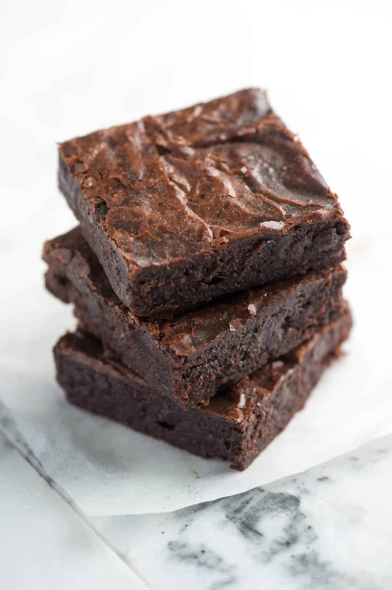

<!DOCTYPE html>
<html lang="en">
<head>
    <meta charset="UTF-8">
    <meta http-equiv="X-UA-Compatible" content="IE=edge">
    <meta name="viewport" content="width=device-width, initial-scale=1.0">
    <title>Odin-Recipes</title>
</head>
<body> </body><h1>Jane Bennet Brownies</h1>
<p>   
<p><h3>Obstinate, headstrong brownies </h3></p>
<p><ul><li>semi-sweet chocolate</li><li>flour</li><li>sugar</li><li>baking soda</li></ul></p>
<p><ol><li>melt chocoate</li><li>stir into flour</li><li>add sugar and baking powder</li><li>bake at 350 degrees for 45 minutes</li></ol></ol></p>
</body>
</html>
    
</body>
</html>